34.2.1. How to add Forming Express operation
34.2.2. Process settings definition
34.2.3. Temperature Calculation settings
34.2.5. Object Basic definition
34.2.6. Object geometry definition
34.2.7. Symmetry Plane definition for workpiece
34.2.8. Object Mesh Definition
34.2.13. Scheduled Positioning
34.2.14. Inter-Object relations
34.2.15. Defining Primary Die Stroke or Total Process Time
Forming Express operation is accessible by two ways,
Forming express independent operation.
Forming express MO Wizard Operation.
For adding Forming express independent operation
Create a new problem by selecting File  New Problem or by clicking the New Problem
New Problem or by clicking the New Problem  icon. The Problem Setup window will
appear as shown in See Fig. 34.2.1. Select the 3D Forming Express radio button. Then Define Problem Name, select
Unit system radio button in units field in New Problem popup and click on
icon. The Problem Setup window will
appear as shown in See Fig. 34.2.1. Select the 3D Forming Express radio button. Then Define Problem Name, select
Unit system radio button in units field in New Problem popup and click on  button for opening a new Problem using the Forming Express wizard.
button for opening a new Problem using the Forming Express wizard.
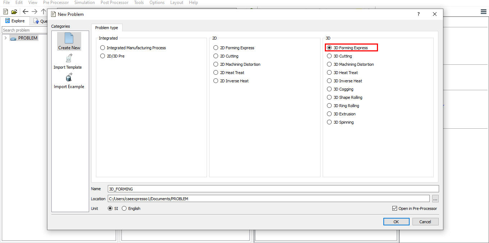
Adding Independent 3D Forming Express operation.
Then 3D Forming Express operation will open as shown in the Fig. 34.2.2.
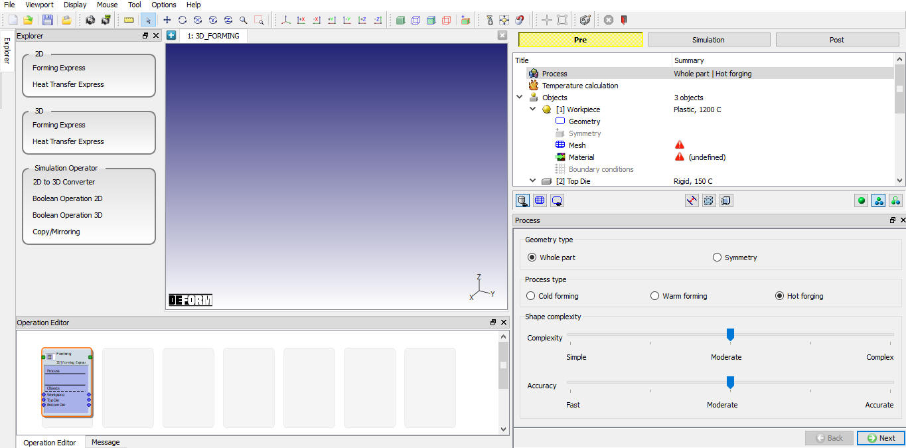
Independent Forming Express wizard.
Here you can add or delete express operations and Simulation operators. Heat transfer express operations has been explained in section 36. Introduction to Heat Transfer Express.
2D to 3D converter operation has been explained in section 44.1. 2D to 3D Convertor
Boolean operations has been explained in section 45.1. Boolean Operator.
Copy/Mirroring operation has been explained in section 46.1. Copy Mirroring
For Adding Forming Express operation in MO Wizard.
Create a new problem either by selecting File  New Problem or by clicking the New Problem
New Problem or by clicking the New Problem  icon.
The Problem Setup window will appear as shown in Fig. 34.2.3. Select " Integrated Manufacturing Process" radio button and unit system
radio button in units field. Define Problem Name and click on
icon.
The Problem Setup window will appear as shown in Fig. 34.2.3. Select " Integrated Manufacturing Process" radio button and unit system
radio button in units field. Define Problem Name and click on  button to open a new Problem using the Deform Integrated Manufacturing Process (MO).
button to open a new Problem using the Deform Integrated Manufacturing Process (MO).
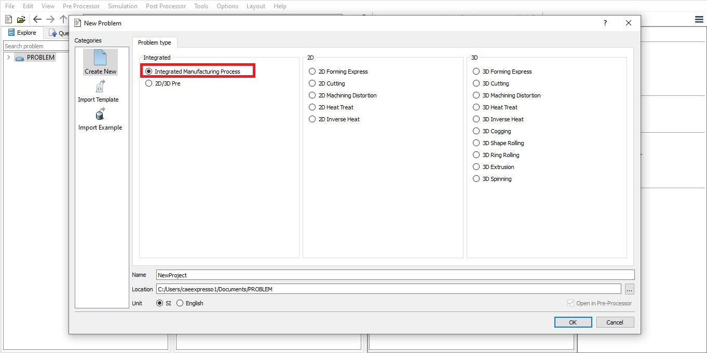
Opening MO wizard
MO wizard will open, Forming Express Operation can be added in MO wizard from explorer tab by clicking on  button next to 2D Forming Express. Also, user can add by drag and drop
into the Operation Editor as shown in Fig. 34.2.4. Forming express operation can also be added after
the Heat transfer operations interactive or in batch/scheduled mode.
button next to 2D Forming Express. Also, user can add by drag and drop
into the Operation Editor as shown in Fig. 34.2.4. Forming express operation can also be added after
the Heat transfer operations interactive or in batch/scheduled mode.
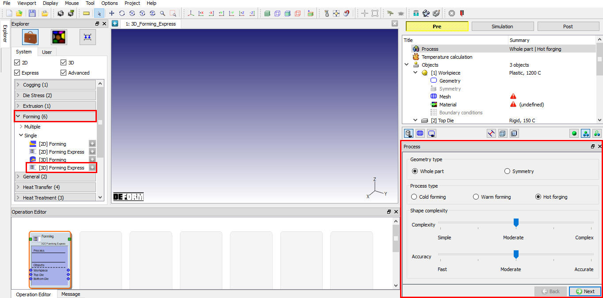
Added 3D Forming Express operation into operation editor
In Process window simulation modes such as Geometry Type, Process Type and Shape Complexity and Accuracy has to set for the forming express operation as shown in Fig. 34.2.5.
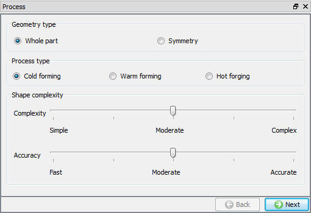
Process settings window
Geometry Type
In Forming express full or symmetric 3D geometry models can be setup by selecting the respective radio buttons Whole part or Symmetry.
When the forming part is asymmetric or need to study any asymmetric behavior
during forming then user has to select the Whole part geometry model type.
If the forming part is symmetric then user can select the Symmetry geometry type to setup the symmetric problem model, this adds the
symmetry plane selection window after workpiece geometry window. In symmetry window user has to select symmetry planes to fix the velocity along the symmetric plane.
Process Type
Three Process types Cold forming, Warm forming and Hot forging are available in Forming express. In Cold forming operation Heat transfer mode will be off, so no temperature calculation happens during simulation. In Warm and Hot forging types Heat transfer mode will be on and Temperature calculation window will activate. Temperature Calculation (See Fig. 34.2.5..) window gives options to select Isothermal and Non Isothermal setup.
Shape Complexity and Accuracy
The shape complexity and simulation accuracy slider bars (See Fig. 34.2.5.) influence the mesh settings and number of time steps used in the simulation. This in turn influences the run time and level of detail available in the simulation.
Shape Complexity:
Simple: The geometry of the objects are simple in nature. They require minimum number of elements, are easier to solve and takes less time.
Moderate: The geometry of the objects are moderate (not too complex) in nature.
Complex: The geometry of the objects are complex in nature.
Shape Accuracy:
Fast: Useful for fast evaluation of a process. In exchange for faster run times, there is a higher risk of missing important details.
Moderate: The simulation uses settings which attempt to balance calculation time and accuracy.
Accurate: Very detailed analysis of the process is done, which will generally capture minute details. Calculation time and storage requirements are more.
Temperature Calculation (See Fig. 34.2.6.) window gives options to select Isothermal and Non Isothermal setup. Isothermal to keep the temperature constant and Non isothermal to calculate temperature in only workpiece or workpiece and dies.
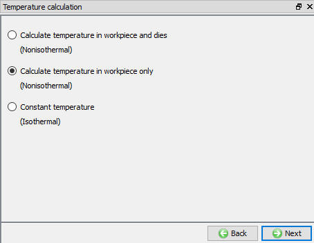
Temperature Calculation type settings window
Isothermal: Simulation is treated as constant temperature. Changes in temperature due to deformation, heating or heat exchange with environment are ignored. Appropriate for processes where change in temperature do not significantly influence simulation results. Examples include: most cold forming processes and hot forming processes where the effect of temperature change is neglected for convenience. In this setup dies neither have mesh nor temperature calculation.
Non-isothermal: A process in which the temperature of system is not constant. Adding temperature calculations will improve material flow predictions and load predictions, particularly in processes where there are substantial changes in temperature.
Calculating temperature in tools further improves workpiece temperature calculation, because evolving tool temperature influences heat loss from the workpiece.
User can select the number of objects that is required to perform the operation from this window depending on the process set up (See Fig. 34.2.7.). User has to note that we can have only one plastic object in a simulation. A maximum of 100 dies can be added.
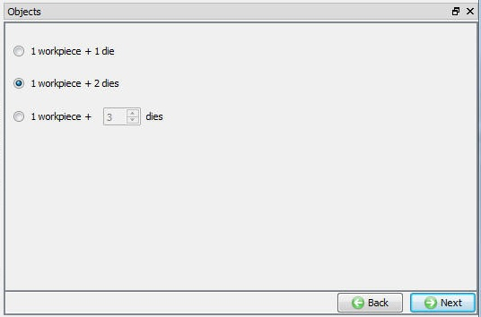
Objects selection window
Object basic definition includes object name, type and temperature. In addition to this object state variable values can be initialized by using Advanced button and object data like geometry, mesh, boundary conditions and material can be imported from DEFORM .DB /.Key file. (See Fig. 34.2.8.)
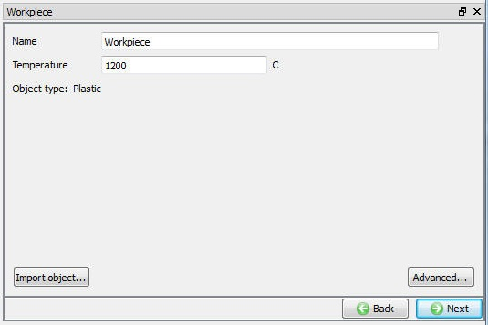
Workpiece window
Object Name: User can define the name for all the objects available in the operation.
Object Type: The object type (OBJTYP) defines if and how deformation is modeled for each individual object in a DEFORM problem. In Forming Express operation only two object type are available those are Plastic and Rigid and those two are automatically predefined by object number, so workpiece will be plastic and dies will be rigid. More object types are explained in chapter 11. General Object Data Definition, for details refer 11.4. Object Type.
Plastic: Plastic objects are modeled as rigid-plastic or rigid-viscoplastic materials depending on characteristics of materials. The formulation assumes that the material stress increases linearly with strain rate until a threshold strain rate, referred to as the limiting strain rate (LMTSTR). The material deforms plastically beyond the limiting strain rate. The plastic material behavior of the object is specified with a material flow stress function or flow stress data (FSTRES). In Forming Express operation workpiece is automatically assigned to Plastic object type.
Rigid: Rigid objects are modeled as non-deformable materials. In the deformation analysis, the object geometry is represented by a geometric profile (DIEGEO). Deformation solution data available for rigid objects include object stroke, load, and velocity. The geometric profile is used for all deformation analysis and the mesh for the rigid object is used for all thermal, transformation and diffusion calculations. In Forming Express, dies or tools are automatically assigned to Rigid as they are non-deformable objects.
Note:
Should note that object type is predefined by object number in Forming Express.
There is an Import Object button on the Object page. This is for importing complete object data from another DEFORM file.
Object Temperature: User can define the object temperature in the Temperature field of the respective object window as shown in Fig. 34.2.8.
Advanced Object Settings: The advanced setting Initialization options (See Fig. 34.2.9.) will be useful when user
import the object from previously run project or problem or when forming express operation is added after few other operations and if there is need to initialize few important state variables.
The user can initialize temperature, strain, velocity, damage and displacement that has taken place in the deformable object using the advanced setting options. (See Fig. 34.2.9.)
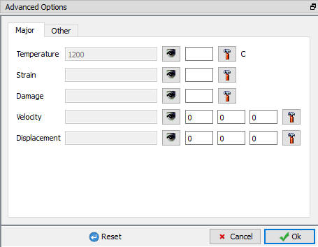
Advanced object settings
More variables can be initialized in Forming operation, for detail refer 19. Object Positioning.
The average strain rate (AVGSTR) is a characteristic average value of the effective strain rate. An approximation of this value should be given at the start of the simulation.
The limiting strain rate (LMTSTR) defines a limiting value of effective strain rate below which a plastic or porous material is considered rigid and behaves as Newtonian fluid like material.
: Using this user can rest back the initialized state variables value.
For more Deformation object properties options available in Forming operation refer 16.1. Deformation Properties.
Geometry window is used to create the geometry of an object as shown in Fig. 34.2.10. Before creating geometry only Define Primitive Geometry option will be available but after creating geometry Check, Scale, Reverse, Fix and Mark surface geometry options will activate and after generating mesh Extract from mesh option will activate.
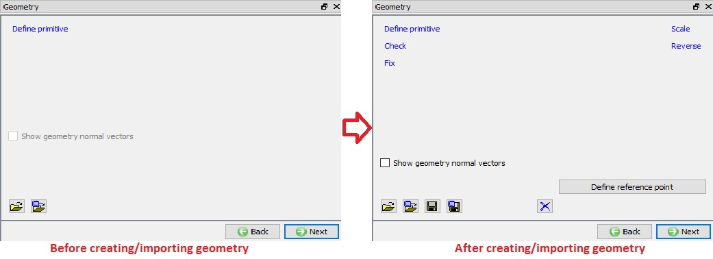
Geometry definition window
Define primitive
There are three primitive shapes in geometry primitives such as Box, Cylinder and Hollow Cylinder that can be used to generate geometries as shown in Fig. 34.2.11. In each case, the user has to scale appropriately to the problem by defining the dimensions. In addition to these primitives Extrude and Revolve can be used to convert 2D cross-section to 3D. Rotational symmetric objects are created by using the revolve angle option for cylinder, Hollow cylinder and Revolve primitives.
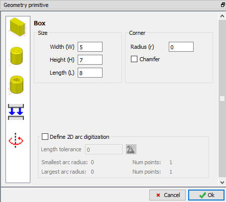
Geometry primitive window for 3D geometry type
Check 
Always check geometry. DEFORM has a checking algorithm that checks for number of invalid edges, invalid orientation, polygons with small area and number of surfaces. Every type of error cannot be detected.
Using this Check Geometry option opens the Geometry Checking Results window which gives a summary of the object’s geometry (See Fig. 34.2.12.). For an object that has a closed volume, there should be 1 surface, 0 free edges and 0 invalid entities (as circled below in Fig. 34.2.12.). Objects that are imported as surfaces and not solids will have a free edge but should still only have 1 surface.
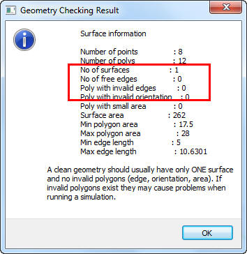
Geometry Checking Results
Scale 
Geometry can be scaled in forming operation to accommodate thermal expansion by specifying the scaling factor. (See Fig. 34.2.13.) The scaling factor can be calculated by temperature differential and temperature dependent material data. The scaled geometry can be saved into different Geometry saving formats.
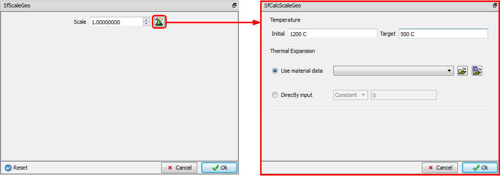
Scale Geo window
Reverse 
This feature reverses the surface/ normal of the geometry. Always surface/Normal of the geometry should be outwards.
Fix
This feature will handle geometric problems where there are either multiple surfaces or open (holes) regions by deleting any extra surfaces and filling holes. For minor or localized problems, this works well. For more troublesome file such as this one, the repair may not produce a desirable result. (See Fig. 34.2.14.)
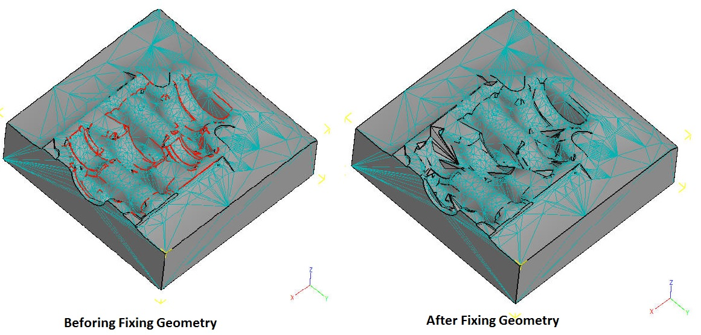
Fixing Geometry of crankshaft Die
Mark Surface
Marking any surface takes it out of any contact calculations during the simulation. Even if workpiece comes in contact with that object, normally applied for die/punch surfaces where in practical scenario contacts wont form to avoid the unintended contact calculations.
Other Geometry options
Show Geometry inside mark: Checking this option enables the Geometry surface normals
display.
Define reference point: User can select the geometry reference point by clicking on this button from display window. This reference point is required to define the distance between objects stopping controls stopping controls.
Import Geometry from a file  : Using this option user can import the geometry from a file.
: Using this option user can import the geometry from a file.
Load Geometry from Library  : Using this option user can imports geometry from Library.
: Using this option user can imports geometry from Library.
Save the Geometry to a file  : It saves the Geometry to a file.
: It saves the Geometry to a file.
Save Geometry to Library  : Using this option user can save geometry to the library.
: Using this option user can save geometry to the library.
Delete Geometry  : Using this option user can delete the geometry.
: Using this option user can delete the geometry.
Symmetry window comes after the geometry window if symmetry geometry type is selected by user. Symmetry to be defined to fix the velocity of nodes on symmetry planes as shown in Fig. 34.2.15. First user need to select the symmetry plane by left mouse click, the selected plane will turn green and click on  button to add selected plane, for more than one symmetry plane repeat
the same steps. For the selected plane system display center and normal as shown in Fig. 34.2.15.
button to add selected plane, for more than one symmetry plane repeat
the same steps. For the selected plane system display center and normal as shown in Fig. 34.2.15.
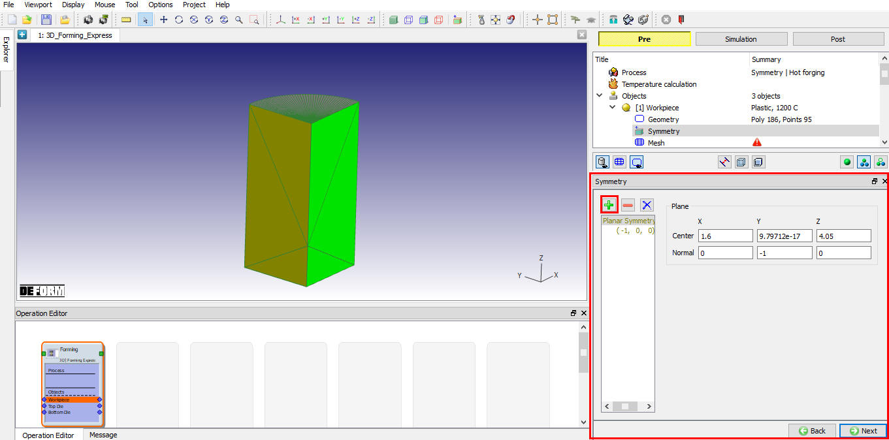
Symmetry plane definition window
The Mesh Generation window allows the user to generate a mesh for the current object. Below Fig. 34.2.16. shows the Mesh generation window in system mode. In this mode system automatically sets the number of mesh elements based on the shape complexity and accuracy setting selection in process window.
System Mode
Using user has to generate tetrahedron mesh for an objects. User can generate the surface mesh or mesh preview quickly before generating the solid mesh required for an object by using button. Once the user is satisfied with the preview of surface mesh, the mesh can be generated on an object by clicking  .
.
After generating the mesh Delete mesh button will get
activate, this is useful to delete the current mesh of an object. For varying the auto calculated number of elements and advanced settings user has to go for User Defined Mode.
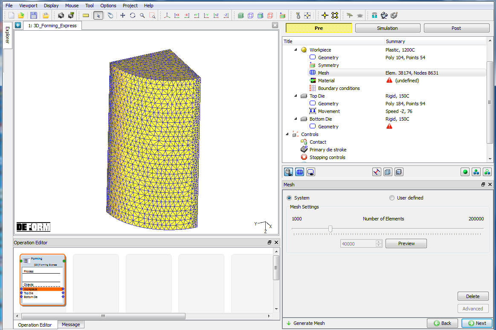
Mesh settings window in System mode
User Defined Mode
For user defined mesh mode option see Fig. 34.2.17., in this mode user can vary number of elements by adjusting the slider bar and use advanced options to change the Size ratio, Minimum elements size, Remesh criteria and Boolean operation. User can generate the surface mesh to observe mesh preview, once the user is satisfied with surface mesh user can generate the solid mesh for 3D object by clicking button.
Number of elements (MGNELM):
The number of mesh elements represents the approximate number of elements that will be generated by the system. The Automatic Mesh Generator (AMG) takes the value for MGNELM and generates a mesh that will contain approximately the same number of elements. The number of elements can be specified merely by adjusting the slider bar and selecting an appropriate value for the current simulation.
The error between the number of specified elements and the number of generated elements is typically about ten per-cent.. For more mesh settings user has to select button.
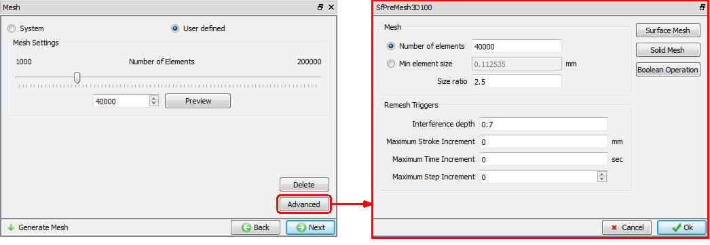
User defined mode mesh settings
Advanced Mesh Options
General Mesh Settings: Within DEFORM, there are two different types of mesh that can be generated for 3D objects.
Relative Mesh: Using the relative mesh setting, the user specifies the number of solid elements to be generated. No matter how complex the shape of the part gets, the number of elements will remain essentially constant.( Fig. 34.2.18.)
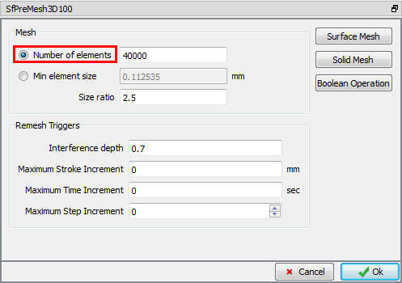
Relative mesh settings
Absolute Mesh :Using the absolute mesh setting, the user specifies the size of the elements and the system determines the total number of elements that are required based on the size of the element specified and geometry. As part complexity increases, the number of elements tends to increase.(Fig. 34.2.19.)
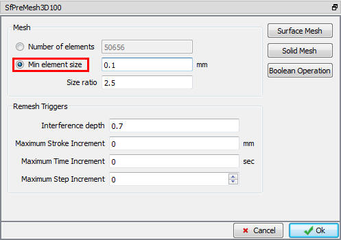
Absolute mesh settings
Element size ratio (MGSIZR): The maximum size ratio between elements is one of several ways to control the mesh density during automatic mesh generation (AMG) by specifying the ratio of node densities. For a value of 3 for MGSIZR, the largest element edge on an object will be roughly 3 times the size of the smallest element edge on the same object. If equal sized elements are desired, then Size Ratio = 1. If Size Ratio = 0, the element size ratio will not be a factor in the mesh density distribution.
Remeshing criteria : Remeshing Criteria (Autoremesh) is the most convenient way to handle the remeshing of objects undergoing large plastic deformation. The Remeshing Criteria Window (See Fig. 34.2.19.) contains a group of parameters that control when and how often the mesh will be regenerated on a meshed object based on assignment of certain triggers. There are four keywords that control the initiation of a remeshing procedure for an object, they are Interference Depth (RMDPTH), Max. Time Increment (RMTIME), Max. Step Increment (RMSTEP) and Max. Stroke Increment (RMSTRK). When the remeshing criteria of any of these keywords has been fulfilled or the mesh becomes unusable (negative Jacobian), the object will be remeshed, the solution information from the old mesh is interpolated onto the new mesh and the simulation continues.
Penetration Distance (relative) : If a negative number (a fraction) is entered, the program will conduct a check on each surface edge that has a contact node on each end. The distance from the middle of the edge to the die surface is calculated and divided by the original length of the edge. If the ratio exceeds the magnitude of the specified value, remeshing will be triggered.
Maximum stroke increment (RMSTRK): Anytime the maximum stroke increment (RMSTRK) is exceeded by the stroke increment of the primary die since the last remeshing step, a new remeshing step will be initiated.
Maximum time increment (RMTIME): Anytime the Maximum Time Increment (RMTIME) (Value of Elapsed Time) has elapsed since the last remeshing step, a new remeshing step will be initiated.
Maximum step increment (RMSTEP): Anytime the Maximum Step Increment (Number of Steps) has occurred since the last remeshing step, a new remeshing step will be initiated.
Delete Mesh : Deletes the mesh generated for the object.
More mesh options like Coating mesh, System mesh density weighting factors, User Mesh Density Window options are not available in Forming express operation unlike in Forming operation, for those mesh options refer 13.2. 3D Tet Mesh Generation.
Below Fig. 34.2.20. shows the material window. User can add or import material from a keyword file or load from DEFORM material library.
After loading system automatically assign the loaded material to an object. User can also edit Plastic and Thermal properties, those are Flow stress, Thermal Conductivity, Heat Capacity, Mass Density and Emissivity using  button.
button.
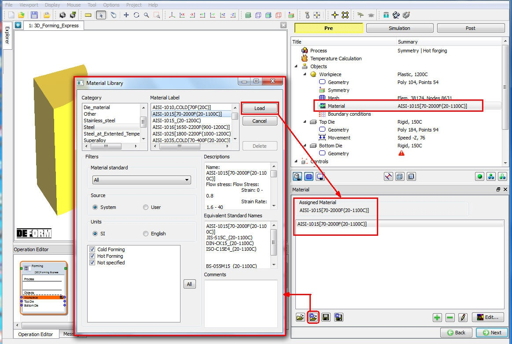
Material window
Once after adding material click on  button, material window will open as shown in Fig. 34.2.21.
button, material window will open as shown in Fig. 34.2.21.
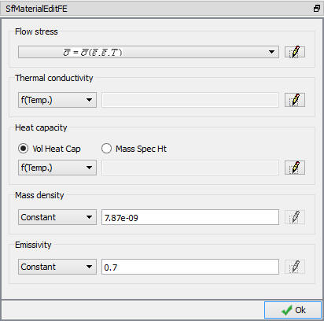
Material editing window
The properties required are dependent on the physical effects being simulated in DEFORM. The material properties that the user is required to specify is a function of the material types that the user is utilizing in the simulation. In chapter 10. Material Data user can get access to all material properties for more information refer 10. Material Data.
In Forming express Boundary conditions window, user can assign only Planar symmetry, Deformation velocity, Thermal Heat exchange with Environment and Temperature boundary constraints for an object. Boundary conditions specify how the boundary of an
object interacts with other objects and with the environment. The most commonly used boundary conditions are heat exchange with the environment for simulations involving heat transfer, prescribed symmetry plane for enforcing symmetry in the model.
Fig. 34.2.22.shows various BCC that can be assigned to an object.
By default planar symmetry planes
will be added for workpiece object as per the symmetry plane selection in symmetry window as shown in Fig. 34.2.22. and also heat exchange with environment will be assigned to all surfaces except the symmetric planes for warm and hot forging process as shown in Fig. 34.2.23.
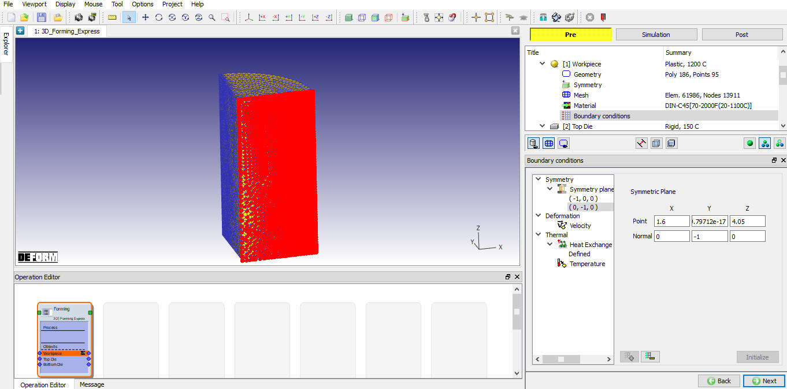
Symmetry boundary condition assigned for workpiece
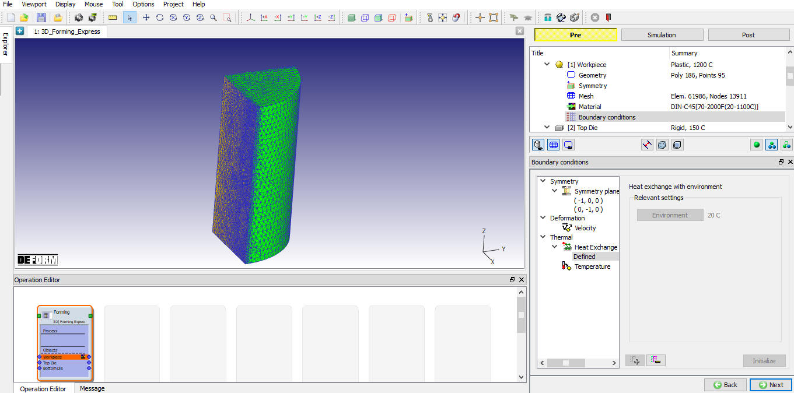
Heat exchange with environment boundary condition assigned for workpiece
The BCC’s are categorized as Deformation,Thermal, Diffusion and Heating. For more information about these BCC's please refer 14. Boundary Conditions.
Movement controls can be applied to rigid objects and boundary nodes of meshed objects. The surface defined by these nodes can be thought of as a "rigid surface". During the simulation, the constrained nodes will move synchronously in the speed and direction defined by the movement controls. Only translational movement type is available in Forming express, rotational movement available in Forming operation, for its more details refer 34.1.10. Movement Controls.
Translational Movement:
During the simulation the constrained nodes will move synchronously in the speed and direction defined by the movement controls. (See Fig. 34.2.24.)
In Forming express only six types of Movement controls are available in Translation Movement type, those are Speed, Load, Hammer, Screw press, Mechanical press, Hydraulic press. Forming operation contains Sliding Die and Path translational movement controls in addition to the forming express and also contains rotational and Torsional movement types, for more information refer 15. Movement Controls.
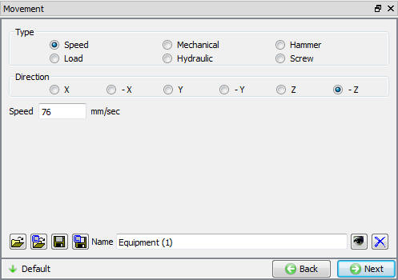
Translational Movement controls window
The lower portion of the movement controls window (See Fig. 34.2.24.) allows the user to import movement specifications from other keyword or database files and to load press information from the library, save the movement controls to a file or movement library, observe the preview and delete the defined the movement definition. For more information on all movement available in forming express refer 34.1.10. Movement Controls.
Below Fig. 34.2.25. shows the positioning window.
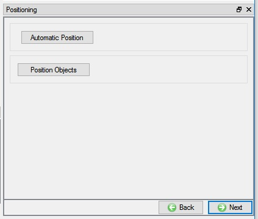
Positioning window
Automatic Positioning 
By clicking on this button, system automatically Positions the Objects with respect to the top die movement direction, this option works best for simple setup with three objects work piece, top die and bottom die.
When mechanical press is used as movement control type for primary die then auto-positioning
is done in 2 steps:
Interference position bottom die to workpiece while coupled with top die without updating stroke
Interference position top die to workpiece while updating stroke.
System will always update stroke with positioning for the object that has mechanical press defined (top die). Update stroke check box should be hidden in express operations.
Positioning Objects 
By clicking on this button, user can position the objects in required directions. Various types of Positioning Options are available such as Drag, Offset, Interference, Flip and Rotational as shown in Fig. 34.2.26. For more information about these options, please refer 19.Object Positioning.
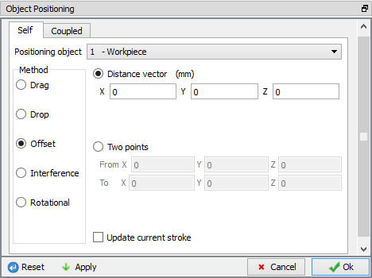
Object positioning window
When user is not sure about the location of an object as in case of Read From DB objects, scheduled positioning will help to position the objects accurately.
Schedule positioning allows the user to define the positioning for objects in MO setup for successive operations for which DB is not generated so that the objects will position before generation of DB while running simulation in Batch mode. (See Fig. 34.2.27.)
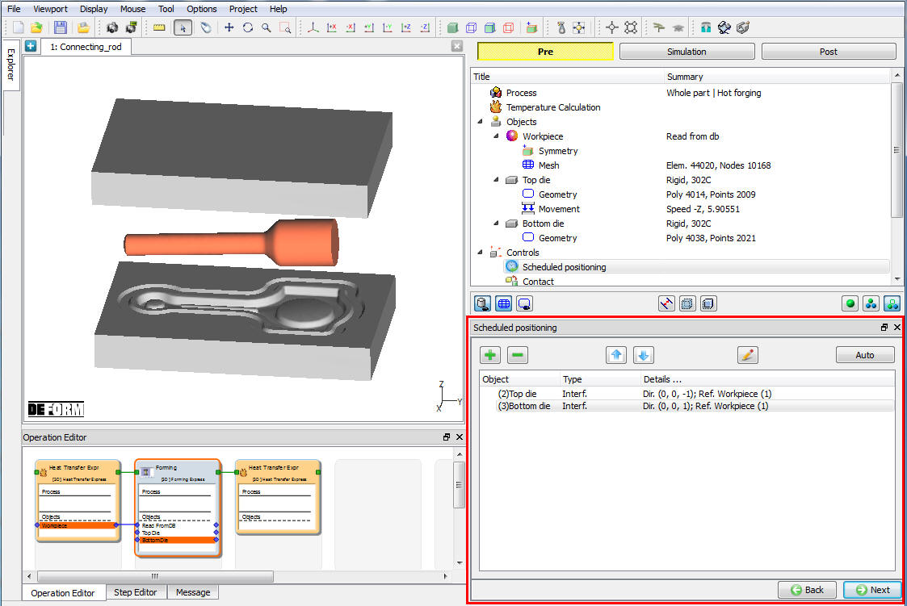
Scheduled Positioning window
The purpose of inter-object relations is to define how the different objects in a simulation interact with each other. All objects which may come in contact with each other through the course of the simulation must have a contact relation defined. In Forming express system automatically define the relation between the workpiece and dies and self contact for workpiece then generate contact when user click on as shown in Fig. 34.2.28. Generated contacts message will display in the message tab below the graphics window.
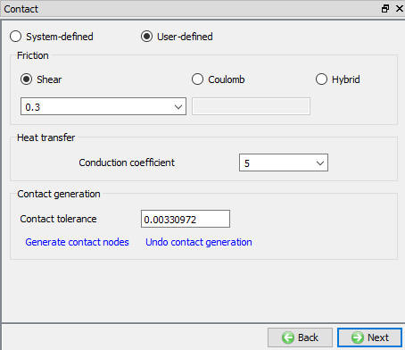
Contact generation window
User can select the Shear or Coulomb friction type and define the friction coefficient. The lubricant used on the tooling plays a large role in the amount of friction that exists between the tooling and workpiece. The friction in turn affects the metal flow at contact surfaces.
Typical values are provided by system for shear friction using pull down button, those values are listed below,
(0.08) for cold forming (carbide dies) processes
(0.12) for cold forming (Steel dies) processes
(0.25) for warm forming processes
(0.3) for lubricated hot forging processes
(0.7) for un lubricated (dry) hot forging processes
(0.4) for Aluminium forming processes
Conduction heat transfer coefficient value can be defined by user and also typical values are provided by system those are,
(1 N/sec/mm/C or 0.0003 Btu/sec/in^2/F) for Free Resting
(1 N/sec/mm/C or 0.0003 Btu/sec/in^2/F) for Dwelling
(11 N/sec/mm/C or 0.004 Btu/sec/in^2/F) for Forming
Primary die stroke (See Fig. 34.2.29.) decides the total amount of die travel during an operation. It is an
estimate of the total die stroke in an operation. It is used to establish time stepping values.
Unless the "exact amount" box is checked, the approximate target tool movement will be roughly 125% of the specified value.
Using the mouse pointer user can define the Primary Die-stroke value by selecting the two points on the objects.
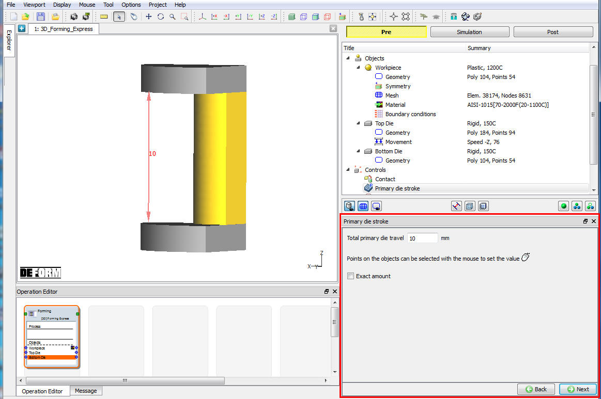
Total primary die stroke definition window
When user uses Load as movement controls then Total Process Time window comes instead of Primary die stroke, this time is used to estimate the stepping values.
Primary Die stroke for Mechanical Press [Exact Forming stroke method]:
For mechanical press, a valid range will be shown. (0 ~ ‘Total Stroke’) (See Fig. 34.2.30.)
If the Total primary die travel is 0 or outside of the valid range, then the input is illegal and the range will be displayed in red color.
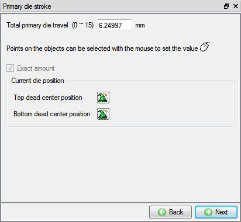
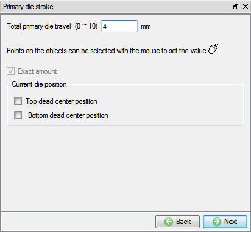
(a) In First Operation (b) In Next Operation
Primary die stroke option with Exact Forming stroke method
There are 3 ways to define exact forming stroke:
User can enter exact forming stroke for Total primary die travel.
User can press Top dead center position  tool or check Top dead center position in next operation if the current position of the die is at Top dead center. When user
presses / checks the Top dead center position
tool or check Top dead center position in next operation if the current position of the die is at Top dead center. When user
presses / checks the Top dead center position  tool, Exact amount will become unchecked in next operations. Forming stroke is set equal to total stroke. Automatic positioning is
performed or scheduled. In the first operation, primary die travel will update with the correct forming stroke. In next operations forming stroke will update after scheduled positioning is performed.
tool, Exact amount will become unchecked in next operations. Forming stroke is set equal to total stroke. Automatic positioning is
performed or scheduled. In the first operation, primary die travel will update with the correct forming stroke. In next operations forming stroke will update after scheduled positioning is performed.
| First Operation | Next operation | Step Editor | ||
| Top Die is defined | Top die is Read from DB | |||
| Total Primary die travel | Displays Calculated Forming stroke | Approximate die travel which will be used to calculate DSMAX | N/A | N/A |
If a  button is used in the first operation, deactivate
button is used in the first operation, deactivate  buttons for both Top Dead Center and Bottom Dead Center until user revisits page. In next operation, if a wizard check box is selected the system will delete any prior scheduled positioning for objects 2 and 3.
buttons for both Top Dead Center and Bottom Dead Center until user revisits page. In next operation, if a wizard check box is selected the system will delete any prior scheduled positioning for objects 2 and 3.
User can presses the Bottom dead center  tool or check Bottom dead center position in next operation if the current position of the die is at Bottom dead center.
When user presses / checks the Top dead center position
tool or check Bottom dead center position in next operation if the current position of the die is at Bottom dead center.
When user presses / checks the Top dead center position  tool, Exact amount will become unchecked in next operations. Forming stroke is set equal to 0. Automatic positioning is
performed or scheduled. First operation will update primary die travel value with correct forming stroke. In Next operation will calculate correct forming stroke after scheduled positioning is performed.
tool, Exact amount will become unchecked in next operations. Forming stroke is set equal to 0. Automatic positioning is
performed or scheduled. First operation will update primary die travel value with correct forming stroke. In Next operation will calculate correct forming stroke after scheduled positioning is performed.
| First Operation | Next operation | Step Editor | ||
| Top Die is defined | Top die is Read from DB | |||
| Total Primary die travel | Displays Calculated Forming stroke | Approximate die travel which will be used to calculate DSMAX | N/A | N/A |
If either of both Top dead center and Bottom dead center  button is used in the first operation, both Top dead center and Bottom dead center
button is used in the first operation, both Top dead center and Bottom dead center  buttons are deactivated until user revisits page.
buttons are deactivated until user revisits page.
In Next operations:
If a check box either for Top dead center and Bottom dead center is selected, the system will delete scheduled positioning for objects 2 and 3.
If the BDC check box is checked, an error message that there is no interference positioning scheduled
for the top die will be displayed.
If the BDC check box is unchecked, an warning message that there is no interference positioning scheduled for the top die will be displayed.
Primary Die stroke for Mechanical Press [ Distance between dies method]:
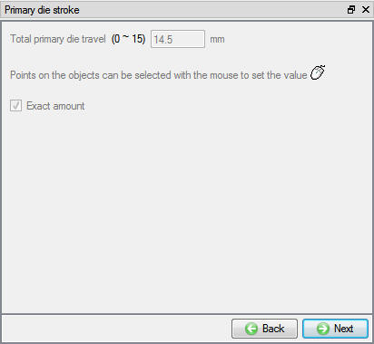
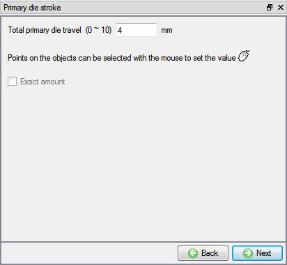
(a) In First Operation (b) In Next Operation
Primary die stroke option with Distance between dies method in First Operation
When user uses Distance between Dies method as forming stroke type then,
In the first operation Total primary die travel will be deactivated and defined by the system .
In Next operations the Exact amount check box will be unchecked and deactivated.
In Next operations Total primary die travel will be used to calculate system defined step size only.
Precise stopping controls may be set at the next step.
The stopping parameters determine the process time at which the simulation terminates. A simulation can be terminated based on maximum number of time steps simulated or maximum stroke or maximum load on the primary die or contact ratio with respect to total surface area or distance between the dies. A simulation will be stopped when the condition of any of the stopping parameters are met. (See Fig. 34.2.32.)
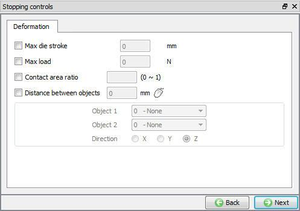
Stopping controls window
For more details about deformation stopping controls refer 34.1.15. Stopping Controls.
The DEFORM system solves time dependent non-linear problems by generating a series of FEM solutions at discrete time increments. At each time increment, the velocities, temperatures and other key variables of each node in the finite element mesh are determined based on boundary conditions, thermo mechanical properties of the work piece materials and possibly solutions at previous steps. Other state variables are derived from these key values and updated for each time increment. The length of this time step and number of steps simulated are determined based on the information specified in the step controls menu. Fig. 34.2.33. Shows simulation control options.
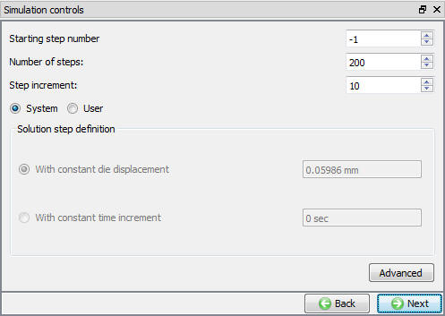
Simulation controls window in system mode
User needs to specify the starting step number, the total number of steps, step increment to save and step definition (die displacement or time increment). In Forming express only constant die displacement and constant time increment can be used as step definition. For all movement controls except Load both die displacement and time increment are available as step definition types, for load movement controls only time increment is allowed.
System type Step Increment constant die displacement:
Now, for Mechanical press in forming express step size will be calculated from [(Total primary die travel) / (number of steps)]x1.2 regardless of whether exact amount is checked or not.
For non-mechanical press operations in forming express step
size will be calculated as [(Total primary die travel) / (number of steps)], if exact amount is checked (See Fig. 34.2.34.).
For non-mechanical press operations in forming express step size will be calculated as [(Total primary die travel) / (number of steps)]x1.2, if exact amount is not checked.
User type Step Increment constant die displacement: It will allow the users to specify their own step size. User should provide an appropriate step size to meet their stopping condition based on their number of steps.
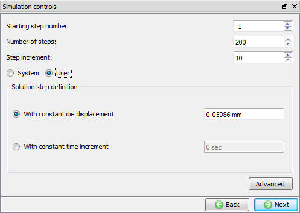
Simulation controls window in user mode
Number of simulation steps (NSTEP)
The number of simulation steps parameter defines the number of steps to run from the starting step number. The simulation will stop after this number of simulation steps have run, unless stopping control is triggered to stop the simulation or if the simulation runs into a problem. For example, if the starting step number is -35 (NSTART) and 30 steps (NSTEP) are specified, the simulation will stop after the 65th step unless another stopping control is triggered first.
Step increment to save (STPINC)
The step increment (STPINC) to save in the database controls the number of steps that the system will save in the database. When a simulation runs, every step must be computed, but does not necessarily need to be saved in the database. Storing more steps will preserve more information about the process, consequently it will require more storage space.
Step increment control (DSMAX/DTMAX)
Solution step size can be controlled by time step or by displacement of the primary die. If stroke per step is specified, the primary die will move the specified amount in each time step. The total movement of the primary die will be the displacement per step multiplied by the total number of steps. If time per step is specified, the time interval per step will be used. The die displacement per step will be the time step times the die velocity.
Stroke per step is frequently more intuitive. However, time per step must be specified for any problem in which there is no die movement (such as heat transfer) or for any problem where force control is used.
In Forming operations enhanced definition of step increment control available to include both the time and stroke dependent step functions. This means, step size (both time per step and stroke per step) can now be defined as a function of time or stroke. This functionality enables finer resolution of saved model information, where it is desired. (typically towards the end of the stroke, where steep changes of die load and cavity filling or flash formation can take place) for more information refer 9.2. Defining step.
Advanced Simulation controls
Advanced Simulation controls provide options to select the Deformation solvers, this is accessed by button. For 3D Forming express only Conjugate gradient, MUMPS and Sparse Deformation Solvers are available (See Fig. 34.2.35.). By default Conjugate gradient solver will be selected.
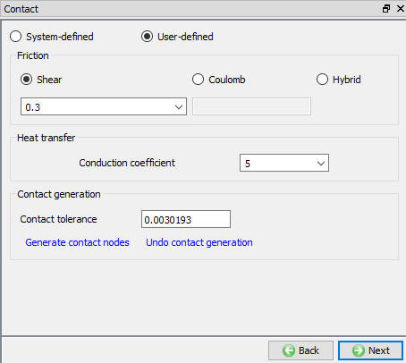
Advanced simulation controls settings
For certain problems, this solver offers tremendous advantages over the sparse solver. For information on solvers, Forming operation gives more simulation controls options in expert mode, for these options details refer 9. Simulation Controls.
Check Data 
It checks the Data. If Data is correct we can generate DB. But while checking Data if it gives any errors or warnings then it should be corrected before generating Database. Errors will not allow the database to be generated while warnings will allow the DB to be generated.
Generate Database 
By clicking on  button database gets generate for the setup.(See Fig. 34.2.36.)
button database gets generate for the setup.(See Fig. 34.2.36.)
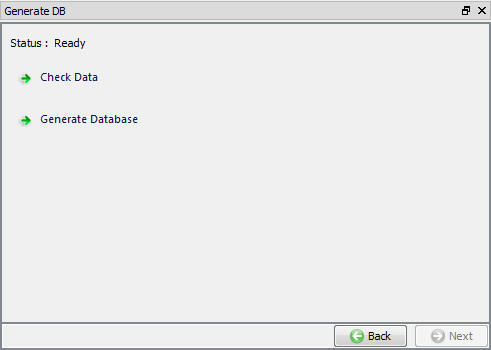
Generate DB window
If user need any of the advanced options which are not available in Forming express then such options can be accessed without loosing the defined data in forming express operation by promoting to forming operation. This option is available in the Right mouse button menu option in operation editor as shown in Fig. 34.2.37. For more details about this upgrading the operation refer to 6.6.4. Upgrading Operations.
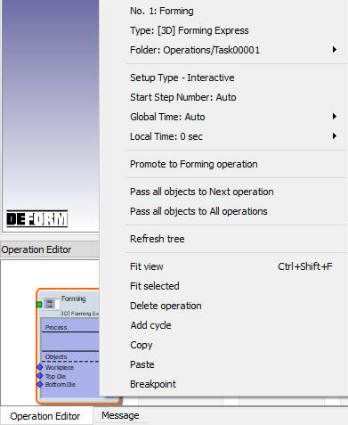
Promoting forming express to forming operation right menu option
After generating database user has to select the MO Simulation mode tab to submit the problem for simulation, for more information about MO Simulation mode refer 6.2. MO Simulation layout. Once the Simulation completed message tab indicates it by giving the proper message then from MO Post mode user can review the results, for more information about MO Post mode refer 6.3. MO Post layout.
Related Topics:
34.1. 2D Forming Express Setup